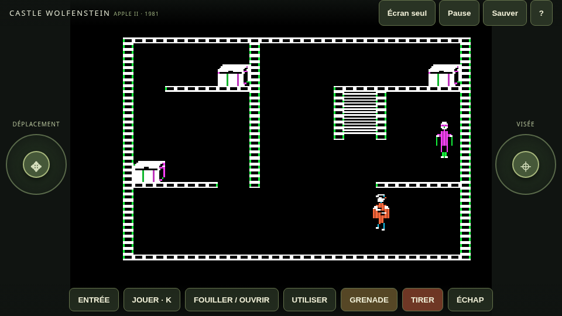
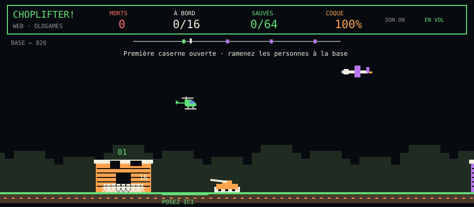

Castle Wolfenstein
Un château, dix balles et des plans secrets. Observez les gardes, choisissez votre passage et tentez l’évasion.
Une machine à remonter le temps, sans quitter votre navigateur. Retrouvez les jeux d’hier et le plaisir de les redécouvrir.
Lancer Castle Wolfenstein ↗
Un château, dix balles et des plans secrets. Observez les gardes, choisissez votre passage et tentez l’évasion.

ADAPTATION WEBPrenez les commandes de l’hélicoptère, libérez les casernes et ramenez 64 personnes à la base. Seize passagers, trois appareils : chaque rotation compte.
Aucun jeu ne correspond à cette recherche. Essayez « Castle », « Wolfenstein » ou « Choplifter ».
Tout se passe dans votre navigateur. Choisissez un jeu puis suivez les indications de démarrage.
Flèches ou ZQSD pour vous déplacer. Les touches de visée, d’orientation et d’action sont indiquées sur chaque page.
Le bouton Sauver conserve votre progression dans ce navigateur. Revenez sur le même appareil pour la reprendre.
Castle Wolfenstein : Entrée au titre, puis K. Flèches ou ZQSD pour déplacer le personnage ; O / K / ; / virgule pour viser haut / gauche / droite / bas. I / P / M / point pour les diagonales. Espace pour tirer, E pour fouiller, T pour la grenade et U pour utiliser un coffre.
Choplifter : Entrée pour décoller ; flèches ou ZQSD pour voler ; J / K / L pour orienter gauche / face / droite ; Espace pour tirer ; P pour pause et M pour le son. Les touches 1 et 2 sélectionnent le mode au menu.
Les deux jeux utilisent le clavier, sans joystick virtuel. Utilisez Plein écran pour agrandir l’image. Les sauvegardes sont locales à ce navigateur et ne se synchronisent pas entre appareils.